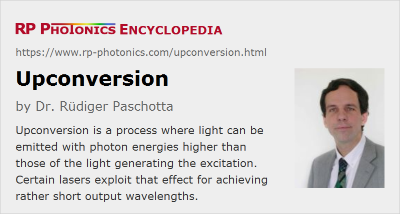

Upconversion
Definition: a process where light can be emitted with photon energies higher than those of the light generating the excitation
German: Hochkonversion
Category: physical foundations
How to cite the article; suggest additional literature
Author: Dr. Rüdiger Paschotta

When a medium (e.g. a laser gain medium) emits fluorescence as a consequence of being excited with incident light, the wavelength of the fluorescence is usually longer than that of the exciting light. This means that the photon energy is reduced. However, under some circumstances upconversion fluorescence can occur, where the wavelength of the emitted light is shorter. This is possible via excitation mechanisms which involve more than one absorbed photon per emitted photon as outlined below.
One kind of mechanism, as illustrated in Figure 1, is sequential absorption of pump photons by excited-state absorption. A first absorption process leads to some metastable excited level, from where further absorption can take the ion to even higher levels. Such processes require high pump intensities, but not necessarily high doping concentrations. With suitable level configurations as e.g. in Tm3+ (Figure 1), a single pump laser can be used for all excitation steps, but there are cases where multiple pump wavelengths are required.
Another type of mechanism involves energy transfer processes between different laser ions. Here, e.g. two laser ions in a metastable intermediate level interact to excite one ion into a higher lying state while the other one becomes deexcited (cooperative upconversion). High doping densities are usually required in order to make possible such energy transfers. Even at lower doping densities, some host media have a tendency for clustering of the dopants, facilitating energy transfers.
Upconversion can be applied in upconversion lasers, where the laser wavelength is shorter than the pump wavelength. In other devices (e.g. erbium-doped fiber amplifiers), upconversion can cause parasitic losses.

Upconversion fluorescence may be strongly suppressed (quenched) by multi-phonon transitions, as these can reduce the lifetimes of metastable levels. Fibers with low maximum phonon energy, such as certain fluoride fibers (e.g. ZBLAN fibers), exhibit much weaker multi-phonon processes and therefore much stronger upconversion. Such fibers are indeed suitable for very efficient upconversion fiber lasers.
Upconversion with Nonlinear Optics
The term upconversion is also sometimes used for other types of processing which generate shorter-wavelength photons. An example is the upconversion of infrared photons to the visible spectral range by sum frequency generation in a nonlinear crystal. This can be used e.g. for photon counting at long wavelengths, where no suitable detectors are available. There are also cases where one uses such nonlinear upconversion for imaging e.g. in the mid infrared; the upconverted radiation can then be registered with an ordinary image sensor for near-infrared or visible light.
Questions and Comments from Users
Here you can submit questions and comments. As far as they get accepted by the author, they will appear above this paragraph together with the author’s answer. The author will decide on acceptance based on certain criteria. Essentially, the issue must be of sufficiently broad interest.
Please do not enter personal data here; we would otherwise delete it soon. (See also our privacy declaration.) If you wish to receive personal feedback or consultancy from the author, please contact him e.g. via e-mail.
By submitting the information, you give your consent to the potential publication of your inputs on our website according to our rules. (If you later retract your consent, we will delete those inputs.) As your inputs are first reviewed by the author, they may be published with some delay.
Bibliography
| [1] | R. F. Lucy, “Infrared to visible parametric upconversion”, Appl. Opt. 11 (6), 1329 (1972), doi:10.1364/AO.11.001329 |
| [2] | M. M. Abbas, T. Kostiuk, and K. W. Ogilvie, “Infrared upconversion for astronomical applications”, Appl. Opt. 15 (4), 961 (1976), doi:10.1364/AO.15.000961 |
| [3] | A. M. A. von Dongen et al., “Upconversion in rare-earth-doped fluoride glasses”, Proc. SPIE 1513, 330 (1991), doi:10.1117/12.46041 |
| [4] | R. Sheps, “Upconversion laser processes”, Prog. Quantum Electron. 20 (4), 271 (1996), doi:10.1016/0079-6727(95)00007-0 |
| [5] | M.-F. Joubert, “Photon avalanche upconversion in rare earth laser materials”, Opt. Mater. 11 (2), 181 (1999), doi:10.1016/S0925-3467(98)00043-3 |
| [6] | F. Auzel, “Upconversion and anti-Stokes processes with f and d ions in solids”, Chem. Rev. 104 (1), 139 (2004), doi:10.1021/cr020357g |
| [7] | J. W. Kim et al., “Influence of energy-transfer-upconversion on threshold pump power in quasi-three-level solid-state lasers”, Opt. Express 17 (14), 11935 (2009), doi:10.1364/OE.17.011935 |
| [8] | A. S. Shik et al., “Mid-infrared upconversion imaging using femtosecond pulses”, Photonics Research 7 (7), 783 (2019), doi:10.1364/PRJ.7.000783 |
See also: upconversion lasers, fluoride fibers, metastable states, fluorescence, excited-state absorption, energy transfer, clustering, doping concentration, multi-phonon transitions
and other articles in the category physical foundations
|  |
If you like this page, please share the link with your friends and colleagues, e.g. via social media:
These sharing buttons are implemented in a privacy-friendly way!